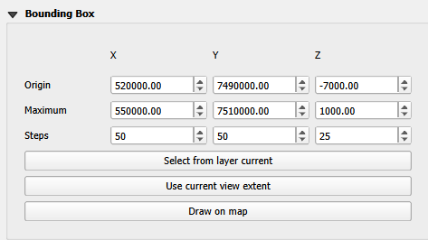
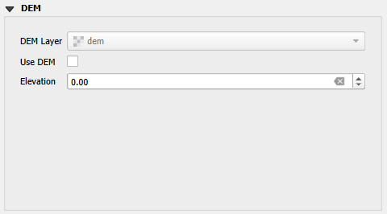
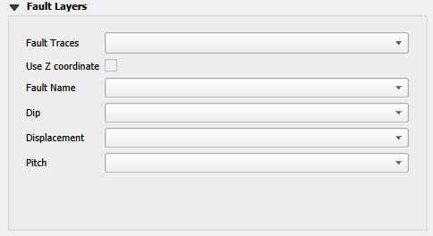
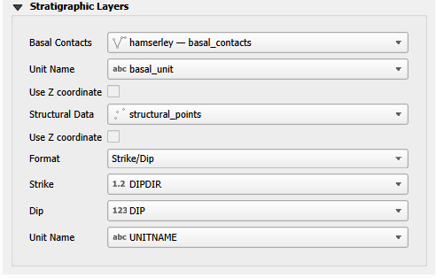
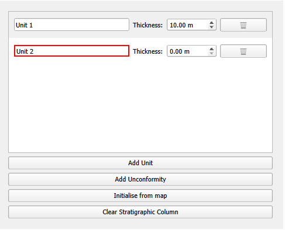
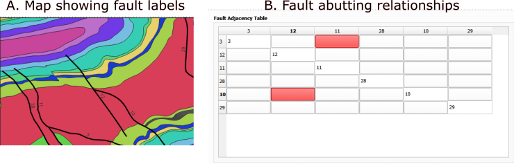
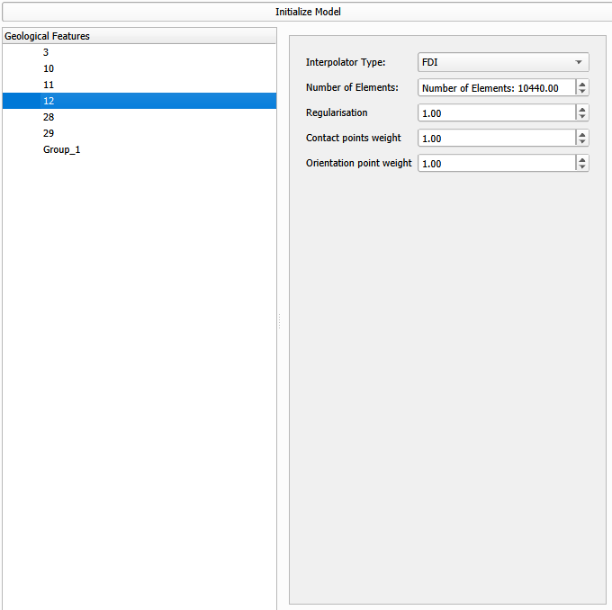

Plugin interface
The steps of the dock
The LoopStructural dock has five steps. The step buttons are at the top of the dock. Each button shows its status: a check mark (done), a warning triangle (a problem) or a hollow circle (not done). Point at a button to see the reasons. The footer shows the most important message of the current step, with Back and Next buttons. The steps are a guide: you can go to any step at any time.
Data: bounding box, DEM and the source layers. Convert data… opens the data conversion tool.
Stratigraphy: the stratigraphic column. The Build column menu has the sorters and Paint Order. The Derive from map menu has Basal Contacts, Thickness and Sampler.
Faults: the fault layer, Calculate topology… and the adjacency tables. This step is optional.
Model: the features and the build of the model.
View: the 3D view and the Export panel. With the setting “separate dock widgets”, this step has a button that opens the 3D view dock.
When a build finishes, a message tells you to go to step 5, and the Next button in step 4 changes to Open 3D view.
Export
The Export panel in step 5 is open when the model is solved. It has three tabs:
Surfaces: one file for each stratigraphic surface and fault surface, in a folder. Formats: VTK (.vtk, .vtp), PLY and STL. A surface with no geometry is skipped.
Block model: a grid that fills the bounding box. Set the number of cells in X, Y and Z. Each cell has the fields
stratigraphy_idandunit. Formats: VTK (.vtk, .vti) and CSV.Cross-section: a vertical section under a line layer (the selected line, or the first line), or a plane from an origin and a normal. Formats: VTK and CSV.
The exports run in the background and show a message when they finish.
The 3D view
The 3D view has three parts: the object list, the feature list with the action buttons, and the properties of the selected object.
Object list: the objects in the view are in groups, one group for each source feature. Each row has a check box (show or hide), the name of the object, its type and, for a surface from a scalar value, its value. Select an object to see its properties. The right-click menu can zoom to an object, export it, show or hide it, or remove it.
Feature list: right-click a feature to add its scalar field, its surfaces, its vector field or its data. The action buttons under the list add the model bounding box, the fault and stratigraphic surfaces, the topography, cross sections and a block model.
Out-of-date objects: when the model changes, the objects that come from the model show in grey italic. The Update button under the feature list builds them again from the current model, with the same settings.
Isosurfaces
Right-click a feature and choose Add Isosurface… to add the surface of the scalar field at values that you choose. Enter a list of values (for example 0.1, 0.5, 0.9), or a start, an end and a count. The default values are inside the range of the scalar field. The plugin adds one object for each value. The name has the value, for example Fault_1_iso_0.50. These objects do not replace the surfaces that the model gives.
If the scalar field has no surface at a value (for example, the value is outside the range of the field), a message shows the value and the other surfaces are still added.
To change the value of an isosurface, select it in the object list, enter a new value in the Isosurface panel of the properties and choose Apply. Only this object is built again. The name of the object does not change. After the model changes, Update builds each isosurface again at its value.
The header of the dock has Save, Open, Reset and Settings. They apply to all of the plugin.
The toolbar has three actions: LoopStructural (the dock), 3D View and Help. The Tools submenu of the Plugins menu has the map2loop dialogs for advanced users.
Selecting Layers
The LoopStructural plugin interfaces with QGIS to define the model input data and parameters.
Bounding box
The bounding box defines the spatial extent of the model and can be either specified manually or automatically by calculating the extent from a selected layer or the current view. Not that the bounding box currently has to be axis aligned, meaning that the bounding box is defined by the minimum and maximum x, y and z coordinates.

Elevation data
The elevation data is used to define the height of the input data. If a digital elevation model (DEM) is available, the height for all data points will be extracted from the layer. Otherwise a constant elevation can be used.
If the points being modelled contain a Z coordinate, this can be used instead of the DEM or constant elevation and is selected on a per layer basis.

Fault layers
The faults trace layer is usually a line layer that contains the trace of the fault. The fault trace is used to define the location of the fault in the model. Optional attributes can be used to further constrain the model:
fault name the name of the fault to be used in the model, if this is left blank the feature ID will be used instead.
Dip the dip of the fault, if this is left blank the fault will be assumed to be vertical.
Displacement - The maximum displacement magnitude of the fault. If this is not specified, a default value will be used.
Pitch - defines the pitch of the fault slip vector in the fault surface. If this is left blank a vertical slip vector is assumed and projected onto the fault surface.

Stratigraphy
The Source layers group is at the top of step 2. Two layers can be used to constrain the stratigraphy of the model:
Basal contacts - this layer defines the basal contacts of the stratigraphy. The layer should contain a line layer with the contact traces. The attributes can be used to define the name of the contact.
Structural data - this layer defines the structural data that is used to constrain the model. The layer should contain a point layer with the structural data. The attributes can be used to define the orientation of the data, such as dip and dip direction.

Stratigraphic Column
The stratigraphic column defines the order of the contacts and any unconformable relationships between them. The column is defined by a list of units - these units are ordered from oldest at the bottom to youngest at the top. Unconformities can be inserted between units to define an unconformable relationship. The thicknesses define the true thickness of each unit and are used to parameterise the interpolation. The unit names should match the names of the contacts in the basal contacts layer. Units without basal contacts can be included in the stratigraphic column but will not be constrained by any data.
The tab has these parts, from top to bottom:
Geology layer: the layer and the unit name field. The plugin shares this layer with the map2loop tools. Under the pickers, a summary shows how many unit names have no match in the layer, and which names.
Buttons: + Unit and + Unconformity add a row at the top of the column. The Build column menu adds units from the map: from the basal contacts, or from a layer field. The More actions menu has Reverse and Clear. Clear asks for confirmation.
The column: the labels “Youngest” and “Oldest” show the direction. Each unit row has a colour button, a name, a thickness and a remove button. Unconformity rows have a different background. To change the order of units, drag the grip handle of a row. When the column is empty, the list shows how to start.
Style map layer: choose Style by unit colour, stratigraphic order or thickness. For the order and the thickness, choose a colour ramp. Apply styles the geology layer.

Out-of-date results
The basal contacts, the calculated thicknesses and the strat_order field on a map layer depend on the stratigraphic column and on the layers and settings of the tools that made them. When one of these inputs changes, the Stratigraphic Column tab shows a message, for example “Basal contacts are out of date (the order of the units changed)”, with an Update button. The button runs the tool again with the settings of the project. The plugin does not calculate again after each change, so you can move many units first. If you move a unit and then move it back, the results stay current.
The plugin records if the thickness of a unit was typed or calculated. The Thickness Calculator does not replace a thickness that you typed. To use a calculated value, set the thickness of the unit to 0 first.
Fault topology relationships
The fault-fault relationship table defines the interaction between faults in the model. This is used to define abutting relationships and where one fault is faulted by another fault. The fault table is updated whenever the faults layer or fault name field is changed. For each fault the columns indicate whether the fault is abutting to another fault. By clicking the cell the relationship can be toggled between no relationship (white background), abutting (red) and faulted (green).

Processing Tools
The plugin provides several QGIS Processing algorithms for working with geological data. These can be accessed through the QGIS Processing Toolbox.
Paint Stratigraphic Order
The Paint Stratigraphic Order algorithm allows you to visualize the stratigraphic order on geology polygons. This tool is useful for:
Visually debugging the stratigraphic column
Quality checking unit order
Creating visualizations of stratigraphic relationships
The algorithm takes:
Input Polygons: A polygon layer containing geological units (e.g., your geology map)
Unit Name Field: The field in your polygon layer that contains unit names
Stratigraphic Column: A table or layer with the stratigraphic column (ordered from youngest to oldest)
Paint Mode: Choose between:
Stratigraphic Order (0 = youngest, N = oldest): Paints a numeric order onto each polygon
Cumulative Thickness: Paints the cumulative thickness from the bottom (oldest) unit
The algorithm adds a new field to your polygon layer:
strat_order: The stratigraphic order (when using Stratigraphic Order mode)cum_thickness: The cumulative thickness in the stratigraphic column (when using Cumulative Thickness mode)
Units that don’t match the stratigraphic column will have null values, helping you identify data quality issues.
Model parameters
Once the layers have been selected, stratigraphic column defined and the fault topology relationships set, the LoopStructural model can be initialised.
Initialise model will create a LoopStructural model with all of the geological features in the model. For each feature in the model the number of interpolation elements (degrees of freedom), the weighting of the regularisation, contact points and orientation weight can be changed.
Number of interpolation elements
By default the number of elements is “Automatic”. The plugin chooses it for each feature from the data of the feature: more constraints, more surfaces and a wider spread of orientations give more elements. The number is rounded to 1 000 and kept between 5 000 and 250 000. The panel of the feature shows the number that was used.
To keep a number for one feature, clear the “Automatic” check box in the panel of the feature and enter the number. The feature keeps it, and the project file saves it, until you select “Automatic” again.
To use one fixed number for all features, clear “Automatic” in the plugin settings and enter the number. Features that you set by hand keep their own number.
